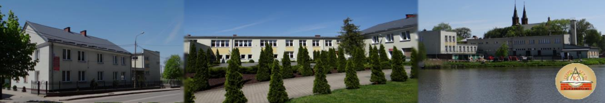

WITAM WSZYSTKICH BARDZO SERDECZNIE!
Przez 4 lata uczęszczałem do technikum nr 2 w Łosicach, na profilu informatyk.
Szkoła niżej na zdjęciach

Od 20 kwietnia Zespół Szkół nr 2 w Łosicach nosi imię Tadeusza Kościuszki. Szkoła znajduje sie na ul. Piłsudskiego 9, 08-200 Łosice.
Szkoła ma sztandar i tablicę upamiętniającą nadanie imienia.
Zespół Szkół Nr 2 w Łosicach jest szkołą średnią, kształcącą również na poziomie zasadniczym w zawodach samochodowych oraz budowlanych.
Szkoła posiada nowoczesne multimedialne pracownie komputerowe oraz wielostanowiskową kawiarenkę internetową.
Uczniowie szkół zawodowych poza zdobywaniem wiedzy ogólnej, rozwijają swoje umiejętności praktyczne w okolicznych firmach i warsztatach rzemieślniczych.
Szkoła stawia na nowoczesność i rozwój. Efektem tego jest wysokie tempo ciągłej komputeryzacji oraz powoływanie nowych szkół, kierunków i profili.
Szkoła równiez umożliwnia uczenie sie na wielu kierunkach technicznych. Pozwala nam również uzyskać zawód, po skończeniu określonych wynikiem pozytywnym egzaminów.